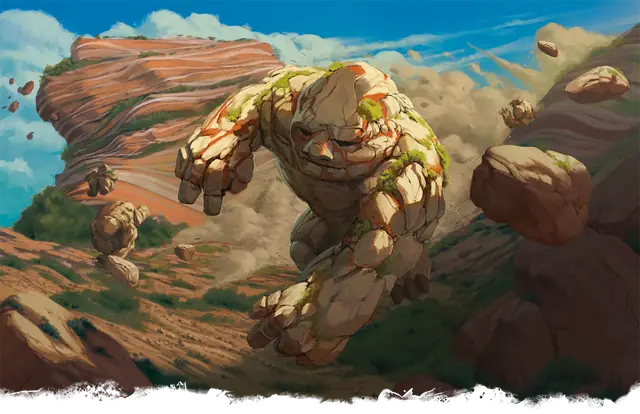

Галеб дур
Galeb Duhr
Средний Элементаль, Нейтральный

Класс Защиты 16 Инициатива +2 (12)
Хиты 123 (13к8 + 65)
Скорость 15 футов (30 футов, когда катится, и 60 футов, когда катится вниз по склону)
| мод | спас | ||
|---|---|---|---|
| СИЛ | 20 | +5 | +5 |
| ЛОВ | 14 | +2 | +2 |
| ТЕЛ | 20 | +5 | +5 |
| мод | спас | ||
|---|---|---|---|
| ИНТ | 11 | +0 | +0 |
| МДР | 12 | +1 | +1 |
| ХАР | 11 | +0 | +0 |
Иммунитеты Яд; Испуганный, Истощение, Окаменевший, Отравленный, Очарованный, Парализованный
Чувства пассивное Восприятие 11, Чувство вибрации 60 футов
Языки нет
Опасность 6 (2 300 опыта; БВ +3)
Действия
Удар оползня. Бросок рукопашной атаки: +8, досягаемость 5 фт. Попадание: 12 (2к6 + 5) Дробящего урона. Если цель — существо Большого размера или меньше, а галеб дур переместился к ней хотя бы на 20 футов по прямой сразу перед попаданием, она получает 7 (2к6) дополнительного Дробящего урона и Опрокидывается.
Оживление валунов (1/день). Галеб дур магическим образом оживляет один или два валуна, которые видит в пределах 60 футов от себя. Каждый валун обладает параметрами Галеб дура за исключением того, что имеет значения Интеллекта 1 и Харизмы 1, а также у него отсутствует это действие. Валун имеет то же значение Инициативы, что галеб дур, и ходит сразу после него, а также подчиняется его командам.Валун перестаёт быть оживлённым либо через 1 минуту, либо когда он или галеб дур умирает.
Бонус мастерства +3
Среда обитания Горы, Холмы
Сокровища Любые
Галеб дур
Глаза и уши Земли
Галеб дуры — живущие в гармонии с землёй ожившие скалы, в их голосах можно услышать вибрацию камня. Их тела и конечности украшают драгоценные камни, руды металлов и другие полезные ископаемые, подчёркивающие уникальность этих существ.
Галеб дуры могут жить так же долго, сколько существуют горы. В отличие от недолго живущих видов, они чувствуют время иначе и воспринимают опасность по-другому. Поэтому галеб дуры предпочитают скрываться от других. Когда же они решают показаться на свет, как правило, чтобы поделиться обширными знаниями об окружающих землях и тайнах под ними, то говорят и действуют взвешено и неторопливо. Во время сражения галеб дур набирает скорость и врезается в противников, а затем оживляет близлежащие валуны, чтобы те проделали то же самое.
Некоторые из жителей гор считают этих духов земли своими союзниками и могут раскрыть этим долго живущим созданиям свои секреты или местонахождение сокровищ, спрятанных для будущих поколений. Другие рассказывают легенды о едва различимых, но гармоничных песнях групп галеб дуров, которые могут вызвать землетрясения и извержения вулканов.